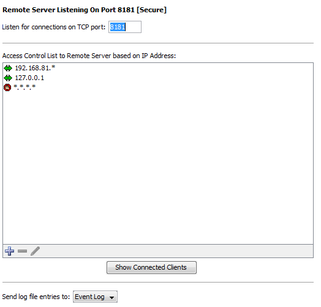
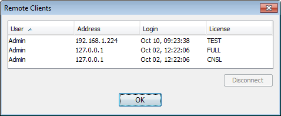

InterMapper's Remote Server allows a user to configure and edit maps on an InterMapper installation from a remote computer. To allow these changes, the Remote Server accepts connections from the InterMapper or InterMapper RemoteAccess application, running on a different computer. For more information about InterMapper RemoteAccess, see the InterMapper Remote web site.
InterMapper always listens for remote connections on its localhost interface, 127.0.0.1. This allows a user to run a copy of the InterMapper RemoteAccess application on the machine that is running InterMapper. For security, InterMapper refuses all Remote Server connections from non-localhost addresses by default to prevent unauthorized configuration.
You can configure InterMapper to accept connections from remote computers, giving varying degrees of access by IP address or by username and password.
Unlike the Telnet and Web servers, you cannot start or stop the Remote Server. You configure the Remote Server using the Remote Server settings panel of the Server Configuration section, found in the Server Settings window.

To configure the Remote Server:
Note: The Server Settings window is available only to users who have administrator privileges.
Click Show Connected Clients to view a list of InterMapper clients connected to the server. The Remote Clients window appears, showing the connected user's name, IP address, time of login and type of license.

For more information on configuring your Remote Server, see Server Access Control. It describes how to set your Remote Server's port, discusses encryption and when to use it, and describes how to configure the built-in firewall's list of IP addresses.
For more information on configuring your built-in servers' firewalls, see Configuring a Firewall.
For more information on users and groups, see Users and Groups. It describes how to set up users and groups, and how you specify who may use the Remote Server. It also discusses administrator access to the Remote Server.
For more information on setting permissions for a particular map, see Controlling Access to a Map. It describes how to set up unique access controls (by username) for an individual map.